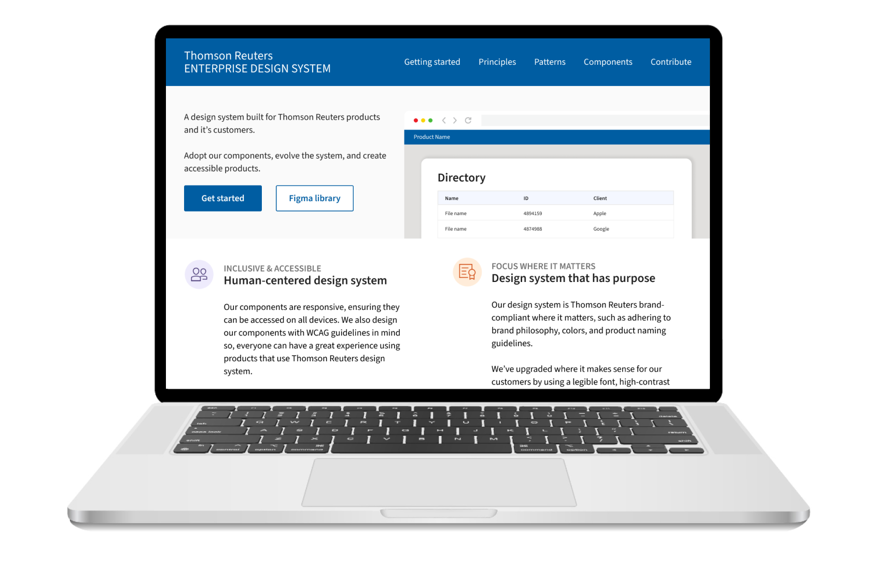

Enterprise design system
Overview
A FAST way forward
An enterprise design system used to shape the way Thomson Reuters builds and co-creates products.
Major accomplishments
- From Stencil.js to Microsoft FAST
Worked together as a team to move from a Stencil.js Web components solution to using Microsoft FAST to accelerate development efforts with limited resources. -
Contribution acceleration
Led initiative for simplifying contribution efforts to speed up system delivery and created onboarding process. -
Design tokens
Using our existing design library, I worked with designers to create a simplistic design token solution, from Figma to code in GitHub, to create an alternate adoption strategy.
Role & responsibilities
Lead UX Engineer, Thomson Reuters
- Accountable for responsive, WCAG-compliant components that meet Product design requirements
- Created and executed styling strategy and vision with emphasis on making UXE's jobs easier
- Supporting the voice of the customer through component API design
Scope of project
- Create Web Components using Microsoft FAST
- Update components to meet WCAG 2.1 AA & Thomson Reuters standards
- Speed up development and design
Year: 2021 - present
Tools: Web Components, Microsoft FAST, SCSS, HTML, GitHub, Azure Dev Ops